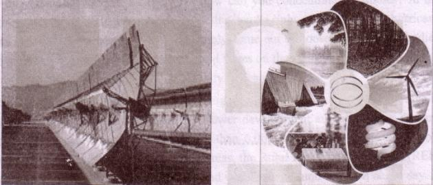
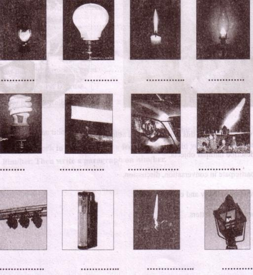
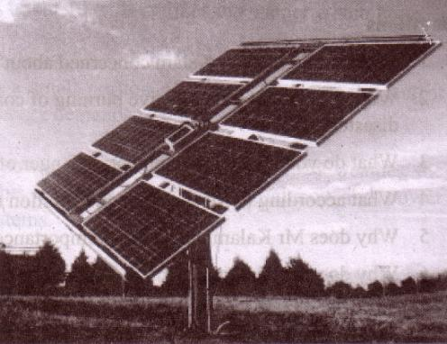
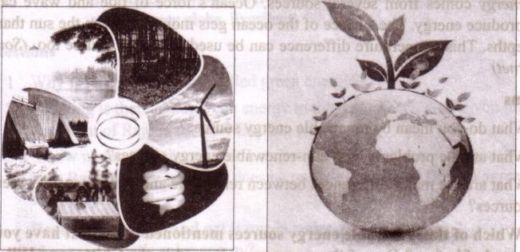

Unit Eleven
Renewable energy

After we have studied this unit, we will be able to
-
describe familiar objects.
-
participate in conversation, discussion.
-
read intensively and extensively.
-
write formal letters
Lesson 1: Renewable energy sources -1
A . Look at the pictures. Discuss with your partner what they are and when and where people use them. Then write the appropriate name from the box under the appropriate picture.

|
head light |
gas light |
hurricane lamp |
electric bulb |
|
tube light |
stage light |
candle light |
energy saver bulb |
|
table lamp |
charger light |
search light |
oil lamp |
B . Read the text and answer the following questions.
Sohan lives in a village in the south-west part of Bangladesh. Last night he could not sleep. His sister had the SSC exam next morning. She could not read either. There was load-shedding. The summer night being sticky hot, life became hell without electricity. Most of their area remained dark for hours due to power shortage.
131In May-June, temperature shoots up to 40 degree Celsius. With almost 90 percent of humidity in the atmosphere, it becomes all sweat, wet, damp and stinky. When you are busy fanning yourself all the time, how can you concentrate on studies? In the night it is impossible to sit in the study with a candle light or table lamp or hurricane lamp or a rural kerosene lamp. People simply come out of houses almost bare-bodied and sit in the open places. Some splash cold water on their faces. Fans are still; lamps are out and it is dark everywhere. It is simply unbearable.
What is the reason of frequent load-shedding? Press reports say there is a shortage in electricity production. According to the Power development authorities, the demand for electricity a few years ago was more than 6,000 MW* a day while the supply remained around 4,200 MW In the rural areas, the Rural Electrification Board (REB) could supply barely half of the total demand which was around 2,400 MW per day. In the capital city, the demand stood at around 1,400 MW while the supply amounted to 650 MW. As a result, load-shedding is unavoidable for the time being. But situation is improving very fast.
*MW is Mega Watt which is the unit to measure electricity
Questions
1. What happened to Sohan last night?
2. How was the summer night?
3. How is a summer day?
4. What happens during load-shedding in Sohan's area?
5. What do people use at night during load-shedding?
C . Complete columns B and C in the following table with the information from the above text in section B. Then calculate the shortage of electricity supply and write the results in column D.
| A Electricity | B Demand | C supply | D Deficit |
|
Nationwide |
- |
- |
- |
|
Rural area |
- |
- |
- |
|
Capital city |
- |
- |
- |
D . Complete the dialogue. Base the dialogue on the nationwide demand, sup ply and deficit of electricity shown in the table in section C.
X : What's the nationwide demand of electricity?
Y : It's . [dash] Mega Watt per day.
X : How much can the Power Authority supply?
Y : They can supply only [dash] Mega Watt per day.
X : What's the deficit/How much is the deficit?
Y : Well, it's [dash] Mega Watt per day.
Now complete the following two dialogues using the other information in the table.
I. X : What's the rural area's demand of electricity?
Y : It's [dash]
X : How much can the REB [dash] ?
Y : They [dash]
X : [dash] ?
Y : Well, [dash]
II X : What's the capital city's [dash] ?
Y: It's [dash]
X : [dash]?
Y : They [dash]
X : [dash] ?
Y : Well, [dash]
E . Do you think load-shedding causes the same kind of problems to people both in and outside the city? Discuss with your partner and make two different lists of problems caused by the long-time load-shedding, one in the city, and the other outside the city.
133|
List of problems caused by load-shedding | |
|
In the city |
Outside the city |
|
- |
- |
F . Write a letter to an editor of a national daily expressing the sufferings of ordinary people caused by load-shedding in your locality.
Lesson 2: Renewable energy sources -2
A . Pair work . Read the words in the box. Which of the words are related to energy?
|
1. fuel |
2. desert |
3. fossil |
4. sun |
|
oil |
forest |
relic |
wind |
|
gas |
valley |
remnant |
water |
|
soil |
waterfall |
sign |
coal |
Now underline the odd word in each column that doesn't belong to the group. Then compare with your partner. Check the meanings of the new words in a dictionary.
-
B. Read the text and answer the following questions.
In a speech at the 90th Science Congress, internationally acknowledged scientist and former Indian president Mr APJ Abdul Kalam mentioned a very important aspect of mankind's future energy crisis. He pointed out that the era of wood and bio-mass has almost come to an end. The age of oil and natural gas would soon be over within the next few decades. Massive burning of world's coal reserves may lead to a worldwide ecological disaster because coal burning emits the highest amount of carbon in the atmosphere. Ukraine's (former Soviet Union) Chernobyl disaster in 1986 has exposed that nuclear energy can be potentially dangerous too. So according to Kalam, the only solution that mankind can look to is the massive use of solar energy in future because . it has some advantages over other forms of renewable energies.

Now why has Kalam put so much importance to the issue of energy? The energy sources have always been a major factor of change throughout history. The world's petroleum consumption has increased from annually 3 billion barrels in 1930 to annually 50 billion barrels today. In the next quarter century, the world's population is expected to be about 8 billion which is 30 percent higher than today. Developing countries will grow their economies about two times faster than industrialized countries. Global economic growth is expected to continue at 3 percent per year. Consequently, the global demand for energy will grow at about 1.7 percent per year on an average. It indicates a 50-percent rise of energy consumption by 2030. If the world's daily petroleum consumption is 220 million barrels now, it will rise to 335 million barrels by that time. The present reserve of hydro-carbon energy resources is limited and it will not be sufficient to meet the future energy challenges of the world. And hence, leading industrial countries have taken initiatives to tap alternative energy sources mainly known as green or renewable energy sources. The bottom line of Kalam's speech indicates that concern of mankind in the 21 St the century.
[Statistics from: Rex W. Tillerson]
Questions
1. What is the scientist Kalam concerned about?
2. Why do you think the massive burning of coal may lead to an ecological disaster?
3. What do you mean by the potential danger of nuclear energy?
4. What according to Mr Kalam is the solution of future energy crisis?
5. Why does Mr Kalam put so much importance on the issue of energy?
6. Why does Mr Kalam put much importance on solar energy?
135C . Make sentences using the substitution table.
| Chernobyl disaster The energy industries The global petroleum Consumption Major industrial economies Scientists | have has | taken been emphasized increased exposed | the use of renewable energy sources. the potential danger of nuclear energy. a major factor for change throughout history to three billion barrels per year. initiatives to tap alternative energy sources. |
D . Complete the following passage with words from the box. There are more
words than necessary.
|
suggested |
radiates |
would |
effective |
conducted |
either |
|
energy |
affected |
crisis |
tap |
were |
- |
To answer the energy [dash] in the world, scientist, professor, and former Indian president Mr AN Abdul Kalam has [dash] that solar energy can be harnessed by establishing space stations in outer space in order to[dash] solar power round the clock.
Mr Kalam said that the sun [dash] about 10 trillion times the energy which humans consume across the world today.
If we [dash] able to extract even a small portion of this energy from the sun, it [dash] be sufficient to secure the energy demands of our future.
Pointing out that space based solar power plants do not get [dash]. by weather, the scientist said that thus it would be far more [dash] in efficiency and power generation than the surface based systems.
Professor Kalam suggested that the energy should be transmitted from space back to earth [dash] through microwave or any other technology like laser. Careful research of the impact and safety concerns would have to be [dash] in this regard.
E . `Massive burning of world's coal reserves may lead to a worldwide ecological disaster...'--- Do you support this view? Explain why/why not.
136F . In Sohan's village, some people headed by Mr Asadul Islam came from in organization to organize a meeting at the local Union Parisha'd (UP) Office.
Their objective was to introduce alternative power supply systems in rural households. Read the dialogue between the UP Chairman and Mr Islam.
Chairman : What's your alternative power supply system?
Mr Islam : Well, it's actually solar power units that we are going to use in
rural areas.
Chairman : What's it? Is it something new?
Mr Islam : Not exactly. It's already familiar in many parts of the world. We've
introduced it in our country too. But yes, in this area it's something
new.
Chairman : I see. Why do you call it `alternative power supply system'?
Mr Islam : Solar power is actually a renewable energy source. Our solar units
can be installed on open roof tops or at any open place where
sunlight is available. It can be a substitute to conventional electricity.
Chairman : Sounds good. How much electricity can they give? Can they run
my irrigation pump?
Mr Islam : I'm afraid Mr Chairman, they can't. Our solar panels are small and
are designed for domestic purposes only. They can produce enough
electricity to run say, two or three tube lights, two fans, a TV set and the like. But larger units can run...
Chairman : Sorry to interrupt Mr Asad. I've to go to the bus stand now to
receive my sick friend. Anyway, several villages in our Union are still without electricity. I hope people will welcome your `alternative power supply system'.
Mr Islam : Thank you, Mr Chairman. Goodbye.
Chairman : Goodbye, Mr Asad. See you again.
G . True false. If false, write the correct answer.
1. Alternative power supply system is a completely new system to introduce.
2. A renewable energy source can be a substitute to conventional electricity.
3. Solar units of Mr Asad are for commercial use only.
H . What questions would you like to ask Mr Islam about solar panel, solar unit, energy sources, `alternative power supply system', its capacity, its advantages and disadvantages, etc? Make a list of your probable questions.
I . Role play. Work in pairs: You take the role of the chairman and your partner the role of Mr Islam. Rewrite the dialogue and act it out.
137Lesson 3: Renewable energy sources-3
A . Look at the following pictures and discuss with your partner what you see in them. How are the two pictures related to each other?

B . Read the text and answer the following questions.
Countries of the world rely heavily on petroleum, coal and natural gas for their energy sources. There are two major types of energy sources: renewable and non-renewable. Hydro-carbon or fossil fuels are non-renewable sources of energy. Reliance on them poses real big problems. First, fossil fuels such as oil, coal, gas etc, are finite energy resources and the world eventually will run out of them. Secondly, they will become too expensive in the coming decades and too damaging for the environment to repair. Thirdly, fossil fuels have direct polluting impacts on earth's environment causing global warming. In contrast, renewable energy sources such as, wind and solar energy are constantly and naturally replenished and never run out.
Most renewable energy comes either directly or indirectly from the sun. Sunlight or solar energy can be used for heating and lighting homes, for generating electricity and for other commercial and industrial uses.
The sun's heat drives the wind and this wind energy can be captured with wind turbines to produce electricity. Then the wind and the sun's heat cause water to evaporate. When this water vapour turns into rain or snow and flows downhill into rivers or streams, its energy can be captured as hydroelectric energy.
Along with the rain and snow, sunlight causes plants to grow. Plants produce biomass which again can be turned into fuels such as fire wood, alcohol, etc. identified as bioenergy.
Scientists have identified Hydrogen as another form of renewable energy source. It is the most abundant element in nature. But it does not exist separately as a gas. It is always combined with other elements, such as with oxygen to make water. Hydrogen, separated from another element, can be burned as a fuel to produce electricity.
138Our Earth's interior contains molten lava with tremendous heat. This heat inside the Earth produces steam and hot water which can be tapped as geothermal energy to produce electricity, for heating homes, etc.
Ocean energy comes from several sources. Ocean's force of tide and wave can be used to produce energy. The surface of the ocean gets more heat from the sun than the ocean depths. This temperature difference can be used as energy source too. (Source: the Internet)
Questions
1. What do you mean by renewable energy sources?
2. What are the problems with non-renewable energy sources?
3. What are the major differences between renewable and non-renewable energy sources?
C . Which of the renewable energy sources mentioned in the text have you heard of before? One of those resources is used in the Chittagong Hill Tracts (CHT) to produce electricity. Can you say what it is? Browse the net in groups to find out the answers to the following issues and present them to the class.
1. What is the name of the project?
2. Where in the CHT is the project located?
3. When did it start operation?
4. How much electricity is being produced from here to the national grid?
5. How many units are working there?
6. What is the positive impact of the project in our national development?
D . Read the dialogue between Raju, a student of class ten and his uncle, Mr Barua who works at Sangu gas field and answer the following questions.
Mr Barua : What are you reading, Raju?
Raju : English, Uncle. A chapter on renewable energy sources.
Mr Barua : I see. Do you know renewable energy is also called green energy? Raju : Green energy?... No Uncle, I don't know. Nothing is there about
green energy in the text either.
Mr Barua : Are you sure? Anyway, renewable energy sources provide us with
energy which doesn't harm environment during its production or consumption. Say, solar energy. You see, there's no burning, no smoke, no emission of gases. It's a sort of clean technology and clean energy source.
Raju : Oh exactly. That's what our teacher said, I remember.
139Mr Barua : On the other hand, burning fossil fuels, say oil or coal, emits
greenhouse gases that harm the environment.
Raju : 0... I see. Yes, I've got the clue, Uncle. Thanks a lot. I now
understand the relation between the two pictures in section A. Green energy sources make a green globe. Excellent!
Questions
1. Why is renewable energy called green energy?
2. `Nothing is there about green energy in the text either'. --- Do you think this statement of Raju is correct? Explain why yes/no.
3. `I now understand the relation between the two pictures in section A'.
What does Raju mean here? What does he really understand? Do you agree on Raju's view here? Why?
E . Read the dialogue and act it out in pairs.
A : What's solar energy?
B : It's one of the renewable energy sources.
A : Why is it called green energy?
B : Well, it's green energy because it helps us keep the Earth green. I
mean it doesn't emit any pollutant in the atmosphere when we produce and use it.
A : I see. Then it must be a clean source of energy.
B : Exactly. And that's why it's also called clean energy.
Now complete the following dialogue taking cues from the above model.
A : What's wind energy?
B : It's one of the [dash]
A : Why's it called [dash] ?
B : Well, it's green energy because [dash] the Earth
green. I mean it doesn't [dash] when we produce and use it.
A : I see. Then it [dash] source of energy.
B : Exactly. And that's why [dash] clean energy.
F . Now write dialogues on hydroelectricity, ocean energy, geothermal energy, hydrogen energy , using the model in E above.
G . Dhaka City Corporation is installing solar panels instead of conventional lights to illuminate roads in many areas. Write a letter to the editor of a daily newspaper appreciating this initiative and saying why this should be followed by other city authorities too.
139